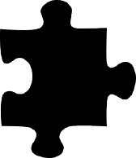
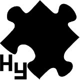

Workstory
About concept
LOGIC
&
SIMPLE
&
SIMPLE
제 포트폴리오의 컨셉은 LOGIC과 SIMPLE입니다.
대부분의 일들을 논리적으로 다루고 복잡한 일들을
간단하게 생각해서 해결하는 제 성격을 표현할수 있기도 했고,
한눈에 들어오는 웹페이지는 논리적이고 심플해야한다고
생각했기때문에 컨셉으로 잡았습니다.
About metaphor

저는 Logic&Simple컨셉에 따라서 메타포는 퍼즐로 정하였습니다.
조각조각 순서대로 논리적으로 맞춰야하는 논리적인 면과,
아귀가 맞는 것끼리 맞춘다는 간단한 규칙만 가지고 있다는
점에서 제가 표현하려는 것을 잘 표현해주고 있다고 생각했습니다.
About logo

Logo를 디자인 할때 컨셉과 메타포를 동일하게 적용하여 퍼즐을 그렸습니다.
퍼즐을 45도 정도 틀어 준 이유는 퍼즐이 움직이고 있는 것처럼 표현하여
역동적인 모습을 표현하기 위해서입니다. 그리고 제 이름 이니셜 hy를
퍼즐의 왼쪽아래에 그려넣어서 저만의 로고로 표현했습니다.
About color
제 포트폴리오의 컨셉에 맞춰서 논리적인 것을 생각했을때
떠오르는 차분한 느낌을 주기위해서 푸른계열의 색을 주로
사용하여 나타냈습니다.
skills
90%
html+css
65%
photoshop
75%
illustrator
85%
Jquery
70%
javascript
참고자료
- ◆ 인터렉티브 프론트엔드 웹 개발 교과서,자바스크립트&제이커리(출판사:제이펍)
- ◆ daneden_gitbut_io_animate_css
- ◆ jquery-circle-progress-master
- ◆ bootstrap
Thank you for visiting my website.